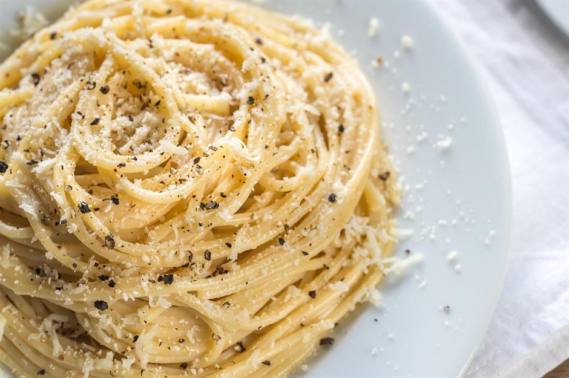

Cacio e pepe from Italy

It does not get much simpler than cacio e pepe. The dish relies on the starchy pasta cooking water, which combines with Parmesan cheese and pepper to form a silky, luxurious taste-bomb of a sauce that clings to the pasta.
Ingredients
- 200 g spaghetti or linguine
- 1 pinch sea salt, for the cooking water
- 1 large knob of butter
- 1 tsp freshly ground black pepper, plus extra to serve
- 60 g Parmesan or pecorino or a mixture (or a vegetarian alternative), finely grated, plus extra to serve
Recipe Instruction Step by Step
- Cook the pasta in a saucepan of boiling, salted water for 6–8 minutes, or until it is not quite tender and still has some bite remaining. Drain and reserve the pasta water.
- Quickly return the pan to a medium-high heat. Add the butter and, when melted, add the pepper and heat for about 1 minute until fragrant.
- Add a ladleful of pasta cooking water (about 100 ml/3.5 fl oz/scant 0.5 cup) to the pan and bring to the boil.
- Reduce the heat, return the pasta to the pan with three-quarters of the cheese, then stir and shake the pan to melt the cheese and create a sauce that clings to the pasta.
- Add the remaining cheese and toss the pasta until it melts and you have a silky smooth sauce, adding a splash more of the cooking water if the sauce seems dry.
- Divide between warmed dishes and serve immediately with extra cheese and pepper.
Return to the top
Return to main page